先認識你的畫面
後台畫面左邊那排就是你所有的工作。這本書的七章，就是這七個地方。（選單很長，下面把它剪成上下兩半並排。）
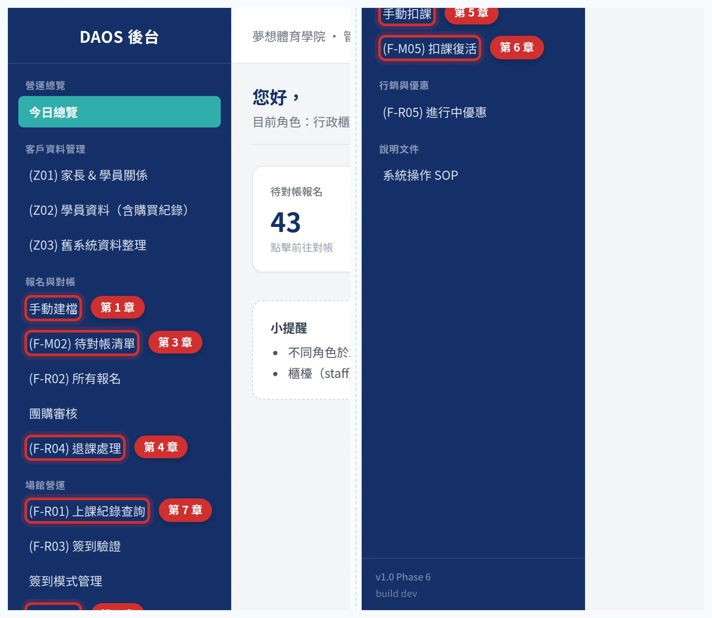
家長那邊看到什麼
家長打電話來說「我找不到」的時候，你要能講出他該按哪裡。這一章就是他手機裡的畫面。
家長的畫面最下面永遠有四個鍵，由左到右是：
首頁 我的課程 聊天 個人
你可以直接跟他說「你按最下面左邊數來第二個」，比說名字快。
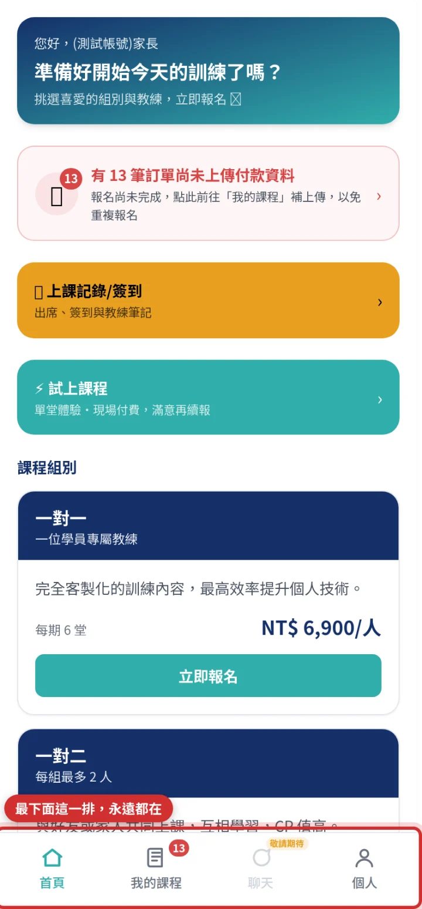
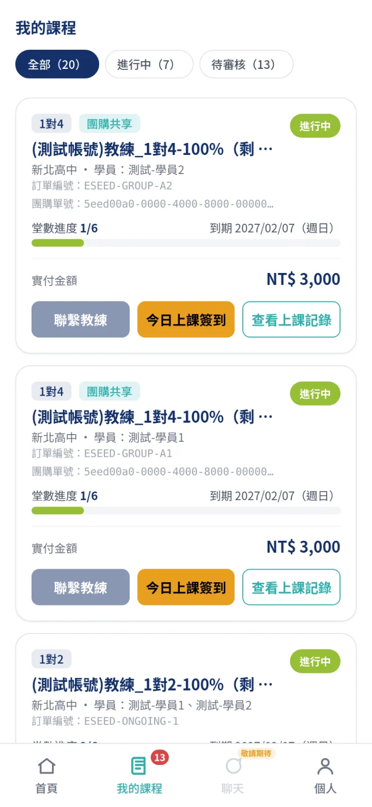
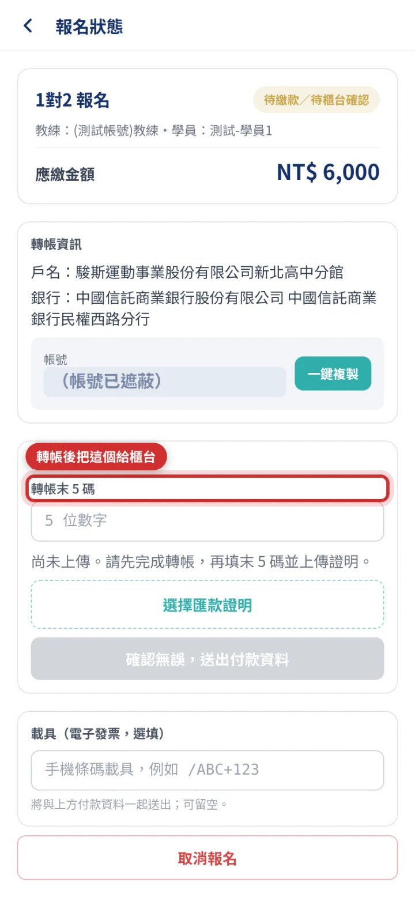
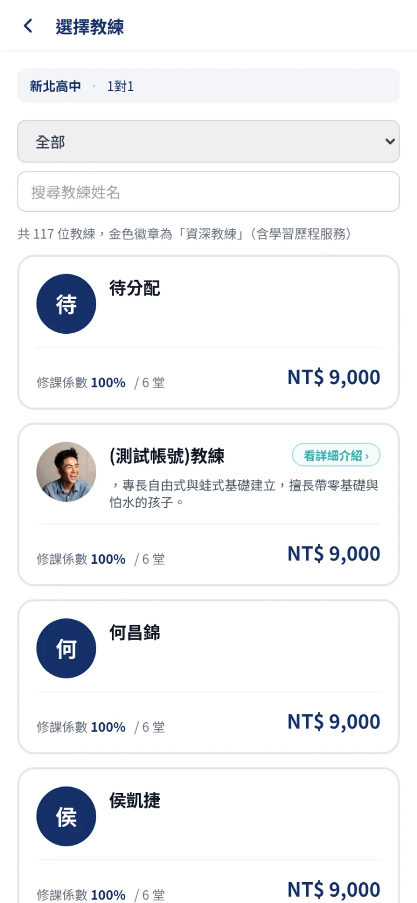
家長這樣問，你這樣講
| 家長說 | 你告訴他 |
|---|---|
| 「我不知道剩幾堂」 | 按最下面左邊數來第二個「我的課程」，每張卡上面就寫剩幾堂。 |
| 「我錢轉了，怎麼還不能上課」 | 那是還沒對帳。請他把轉帳的最後 5 個數字給你，你去第 3 章對帳。 |
| 「我要報名，從哪裡開始」 | 按最下面最左邊「首頁」，然後選場館 → 選教練 → 填資料。 |
| 「教練怎麼有金色的」 | 金色是資深教練，費用比較高，會多做學習歷程。 |
| 「我要改電話／Email」 | 按最下面最右邊「個人」，再按編輯資料。 |
| 「我朋友要一起上」 | 請他在報名時開團，把連結傳給朋友。細節看第 2 章。 |
後台沒有「以家長身分檢視」的功能，你看不到他手機上長怎樣。
所以描述位置的時候，講「最下面那排的第幾個」最不會錯，不要說「右上角那個小圖示」。
家長要報名
家長可以自己在 LINE 裡報名。他弄不出來的時候，你幫他建。
什麼時候用
- 我想報名，可是手機上一直弄不好。」
- 我不會用 LINE，你幫我用好不好。」
去這裡 →
訂單建好之後，還不算報名成功。
它會變成「待對帳」，意思是：錢還沒對好。
等家長轉帳、你去對帳（第 3 章），課程才會真的開通。
家長自己報名的話
他在 LINE 裡照順序點：場館 → 教練 → 一對幾 → 填小孩資料 → 看到金額 → 複製銀行帳號 → 送出。
等他轉帳，然後把轉帳的最後 5 個數字告訴你。
接著就跳到第 3 章。
你幫他建的話
畫面上有三張卡片，從上往下填。三張都填完才送得出去。
-
第一張卡：先找到家長
在上面搜尋家長的名字。找到就點他。
找不到就自己新增。名字和手機一定要填，有星號的就是一定要填。
填完按 建立並連結。
注意看這一行字如果畫面出現「已連結家長（暫存，僅本筆報名使用；不建檔）」，
代表這位家長沒有被存進系統，下次還要重打一次。
是常來的家長，就要按 建立並連結 把他存起來。
-
第一張卡：再選小孩
這位家長以前的小孩會列出來，直接勾。
是新的小孩，按 新增至此家長。
只是這一次臨時要用的名字，打在「或臨時名單」那格，名字中間用「、」隔開。
-
第二張卡：選課
照順序選：在哪個場館 → 哪一位教練 → 一對幾 → 總共幾堂。
「一對幾」點不到怎麼辦代表這個組合還沒被建起來。
你自己弄不了，要請管理員去「課程需求管理」建好，你這邊才會出現。
-
第三張卡：填錢
先填原價。沒填原價，打折的按鈕會按不下去。
要打折就按 免收、9折 或 95折。
轉帳的最後 5 個數字要填，剛好 5 個數字，多一個少一個都不行。
統編（8 個數字）和載具（像
/ABC1234）沒有就空著。 -
送出
成功會看到：「已建檔 N 張訂單（待對帳）」。
接下來就跳到第 3 章去對帳。
| 系統跳出這句話 | 意思是 |
|---|---|
| 請先輸入原始費用（原價） | 原價還沒填，先填原價再打折。 |
| 家長姓名與電話必填 | 第一張卡有星號的沒填完。 |
| 請先連結家長 (Z01) | 只填了小孩，忘記把家長掛上去。 |
| 請選擇或填寫至少一位學員 | 一個小孩都沒選。 |
| 請選擇報名館別／請選擇授課教練 | 第二張卡的選單還沒選。 |
| 請選擇組別型態（需先於「課程需求管理」建立） | 這個組合沒建過，要找管理員。 |
| 請填寫有效的總堂數／金額不正確 | 堂數或金額打錯了。 |
| 轉帳末 5 碼需為 5 位數字 | 不是 5 個數字，或打到英文字。 |
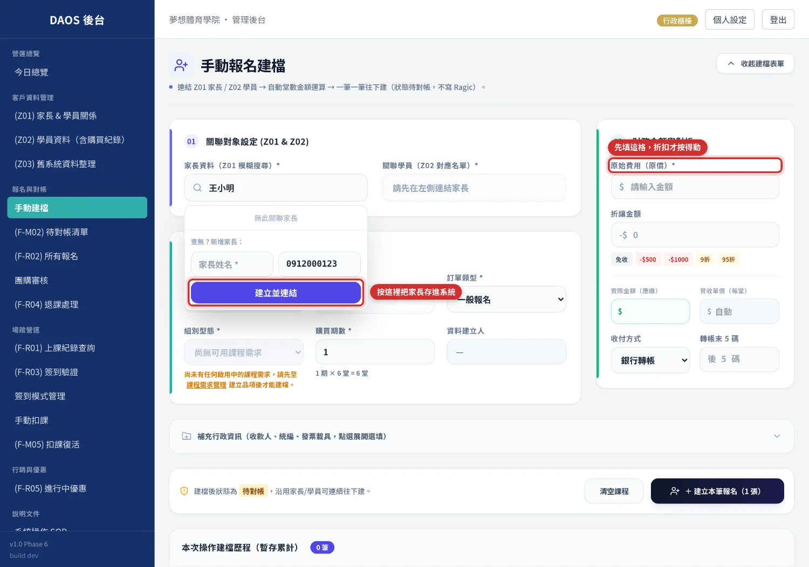
兩個家庭合開一張單
一對二、一對三常常是兩三家人合請一個教練。這叫「團購」。
什麼時候用
- 我們兩家小孩要一起上，可以嗎？」
- 我朋友那家錢已經給了，怎麼還沒過？」
去這裡 →
家長會自己在 LINE 上開團、找人加入。
你的工作只有一件：看一看，然後決定過還是不過。
發票和開課都不在這一頁，那是第 3 章的事。
-
先看這團在哪一區
揪團中＝還在收人收錢，家長還沒送來給你審。
待審核＝在等你按。
按 檢視 可以看這團有哪些人。
-
錢收齊了，但家長沒送來
在「揪團中」找到那一團，按 代為送審（送進待審核）。
這只是幫他送過來排隊，還沒有通過。
-
決定要不要過
沒問題 → 核准後送待對帳
有東西要補、之後還能再送 → 退回補件（可續作）
這團不做了 → 退回（終止）
退回的原因，家長看得到兩種退回都要打原因。你打的那段字，會原封不動出現在家長的 LINE 上。
要寫家長看得懂、知道怎麼補的話。
好的例子：「請補上第二位小朋友的身分證字號」
不好的例子：「資料不全」、「Z02 缺」
這團過了以後，到第 3 章對帳的時候，畫面會跳出一行字：
「此付款單包含 2 個不同家庭，需分別開立 2 張發票」
那時候你要一個家庭填一組發票，兩組都填完才送得出去。
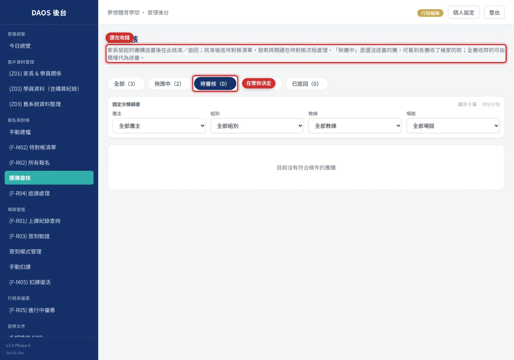
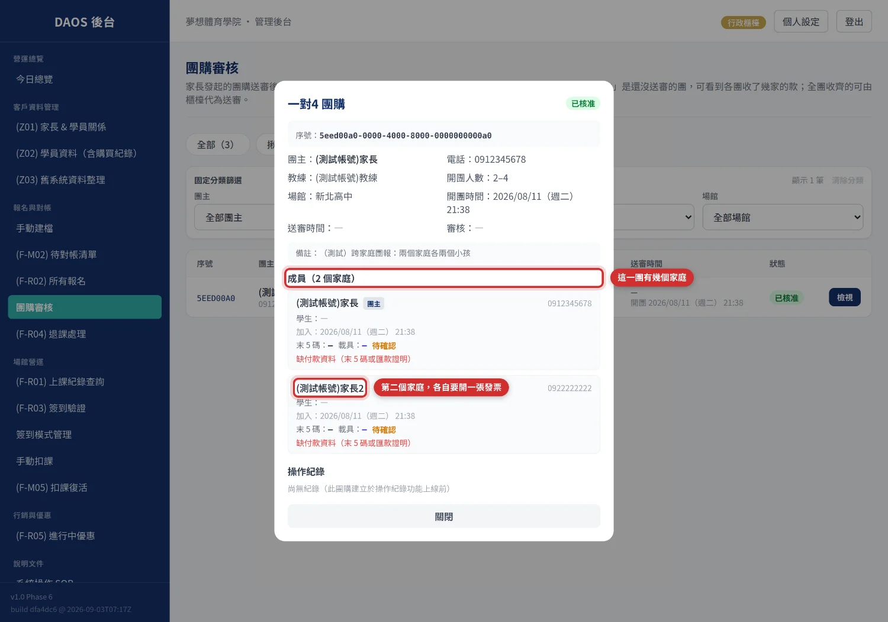
對帳
這是櫃台最重要的一關。你按下去，課程就開通了，家長馬上收到發票。
什麼時候用
- 錢我轉了，最後五碼是 12345。」
- 我付錢好幾天了，怎麼還不能上課？」
去這裡 →
你按 對帳通過 的那一秒，系統同時做四件事：
① 課程開通 ② 開教練跟家長的聊天室 ③ 發票傳到家長 LINE ④ 寫進紀錄
這四件事都收不回來。錢沒對清楚就先不要按。
-
找到那一張單
每張單上面會寫：單號、家長名字（或「2 個家庭」）、要收多少錢、最後 5 碼。
用這四個確認你找對人了。
-
核對錢
拿銀行實際收到的錢，跟畫面上的金額和最後 5 碼比。
兩個都一樣 → 往下走。
有一個不一樣 → 停，看下面那個紅框。
-
對不起來的話
按 退回補件，打上原因，例如：
「轉帳末 5 碼與帳戶紀錄不符，請重新確認後填寫」
家長會收到通知，可以自己重填。
不要硬著頭皮按通過按了通過，課就開了、發票就寄出去了。
之後要收回來很麻煩，還要跟家長解釋。
-
對得起來，就按對帳通過，然後填發票
發票號碼：兩個英文字 + 八個數字，長得像
AA00000000。發票照片：手機拍的就可以，一張不要超過 5MB。
載具：有就填，長得像
/ABC+123。沒有就空著。跳出「轉檔處理中」不用怕如果看到「原始圖片已保存，預覽轉檔處理中」，這是正常的。
照片已經存好了，你可以繼續按下去。
如果是兩個家庭畫面會寫「此付款單包含 2 個不同家庭，需分別開立 2 張發票」。
要兩組都填完才送得出去。系統會分別寄給兩位家長。
兩組的發票號碼不能填一樣，填重複系統會擋下來。
-
送出，完成
會看到：「對帳通過，發票 ○○ 已記錄並推播家長」。
家長的 LINE 會收到發票照片、發票號碼，還有一顆可以直接看課程的按鈕。
退回補件＝ 家長補一補還能再來。
取消＝ 這張單作廢，不要了。
家長重複下單、或說不報了，才用取消。也要打原因。
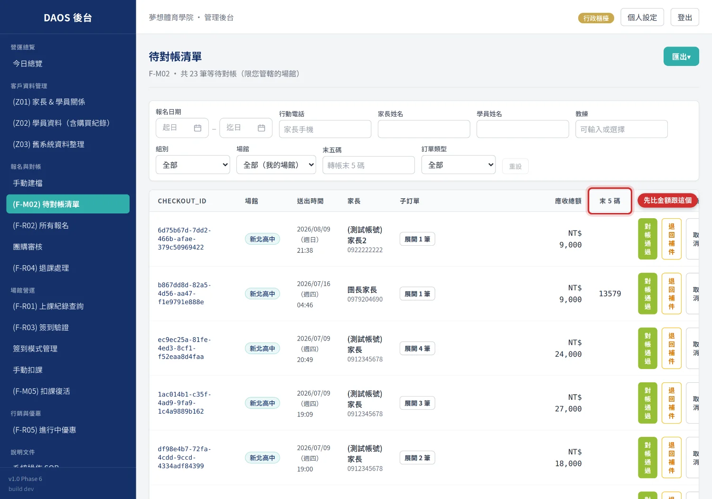
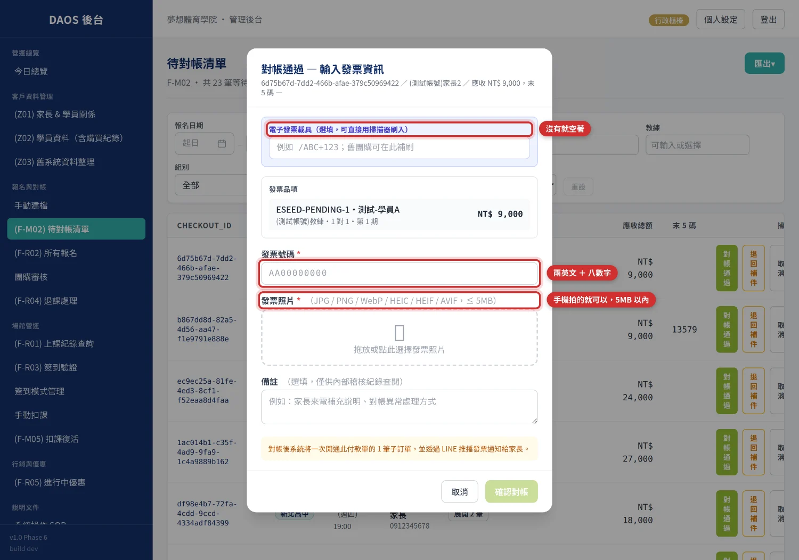
退課
錢要退多少，系統會自己算。你只要選原因、寫清楚為什麼。
什麼時候用
- 我們要搬家了，剩下的課不上了。」
- 小孩生病，這期上不完。」
- 你們一直沒幫我排到教練，我要退。」
去這裡 →
-
找到那筆報名
搜尋框可以打：編號、家長名字、電話、小孩名字、教練、場館。哪一個都行。
-
選原因（五個選一個）
公司因素 - 未媒合到教練
公司因素 - 場地因素
個人因素 - 生病／生理
個人因素 - 一般正常退費
其他選對很重要「公司因素」＝ 我們這邊沒做好。
「個人因素」＝ 家長自己的狀況。
這兩個在月底報表上是完全不同的兩件事，不要隨便選。
-
寫清楚發生什麼事
把事情寫具體，例如：
「家長 8/20 搬遷至台中，已與教練確認不再續期」
不要只寫「退費」兩個字。以後有人要查，看的就是你寫的這段。
-
看一下手續費
下拉有 0%、5%、10%、15%、20%。也可以自己打數字。
你改了，系統會記下來只要跟預設的不一樣，系統會寫進紀錄：
「原定 10% → 實際 0%（由王小明調整）」
這不是在抓你。是以後對帳的人要看得懂為什麼這筆不一樣。
所以改了就順手在上面的原因裡寫一句為什麼。
-
按退課退費
按 退課退費，就完成了。
沒有人會再確認一次你按下去就是最後一步，主管不會再看一遍。
不確定就先別按，去問。
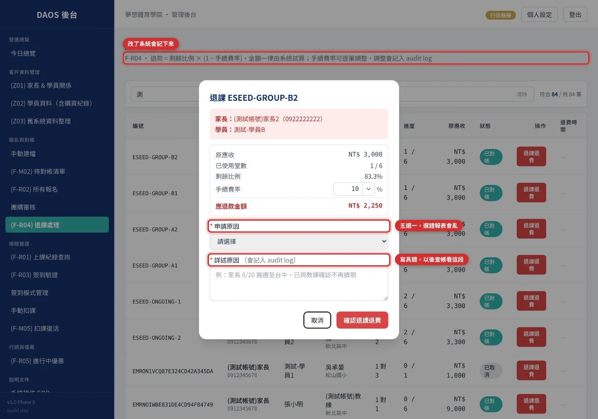
補簽到 和 手動扣課
這一章最容易做錯。做錯的話，家長會被扣兩堂課。
「補簽到」按下去的同時，就已經扣掉一堂課了。
補完簽到，不要再去「手動扣課」。
這兩個是二選一，不是做完一個再做另一個。
先問自己一句：系統的課表上，找不找得到這一堂？
找得到 → 用補簽到
找不到 → 用手動扣課
| 狀況 | 用哪一個 | 去哪一頁 |
|---|---|---|
| 課表上有這一堂，只是忘記簽到 | 補簽到 | |
| 系統裡根本沒有這一堂 （補課、臨時加的、很久以前的） |
手動扣課 | |
| 家長自己按到簽到，按錯了 | 撤銷自助簽到 |
A · 補簽到
課表上找得到那一堂的時候用這個。
-
先把那一堂找出來
去 ，設好日期，按 查詢。
怎麼查看第 7 章。
-
按那一列的補簽到
會跳出一個小視窗，裡面已經幫你填好那堂課原本的時間。
小孩其實是別的時間到的，就改掉。
要填「現在」的話，按 重設為現在。
-
按確認補簽到
做完那一列會馬上變成：有簽到時間、簽到欄寫「已簽到」、備註欄寫「櫃檯」。
這一刻課已經扣掉了。不要再去手動扣課。
B · 手動扣課
系統裡根本沒有那一堂的時候用這個。
-
搜尋
至少要打 2 個字。可以打報名單號、家長名字、家長手機、或小孩名字。
系統只會列出還在上、而且還有剩堂數的課。
-
寫扣課原因
一定要寫。寫清楚為什麼要扣，例如：
「經家長確認，補登 2026/07/12 已完成的課程」
寫下去就改不掉了這段字是不能修改的紀錄。一次寫對。
-
確認上課時間
畫面會把兩個時間放在一起給你看：
① 這堂課實際上是哪天上的 ② 你現在操作的時間
補很久以前的課，記得把①改成當初那一天，不要留成今天。
-
送出
一次扣 1 堂。
教練不會收到通知，這是故意的，因為那堂課本來就會出現在他的今日簽到裡。
| 系統跳出這句話 | 意思是 |
|---|---|
| 請輸入至少 2 個字元 | 搜尋打太短，多打幾個字。 |
| 查無可手動扣課的進行中課期 | 這個人沒有在上的課，或那堂課不在你的場館。 |
| 請先填寫扣課原因 | 原因忘了寫。 |
| 此課期已無剩餘堂數，不能扣成負數 | 課已經上完了。要續課，不是扣課。 |
| 請確認上課時間 | 時間沒填，或填的格式不對。 |
C · 家長自己按錯簽到
去 。畫面中間是今天報到的名單。
右上角可以用家長手機（09xxxxxxxx）或報名編號（像 CP1001）確認是哪一位。
填好原因、撤銷之後，會看到「已撤銷自助簽到，堂數已歸還」。
課已經還回去了，不用再跑第 6 章。
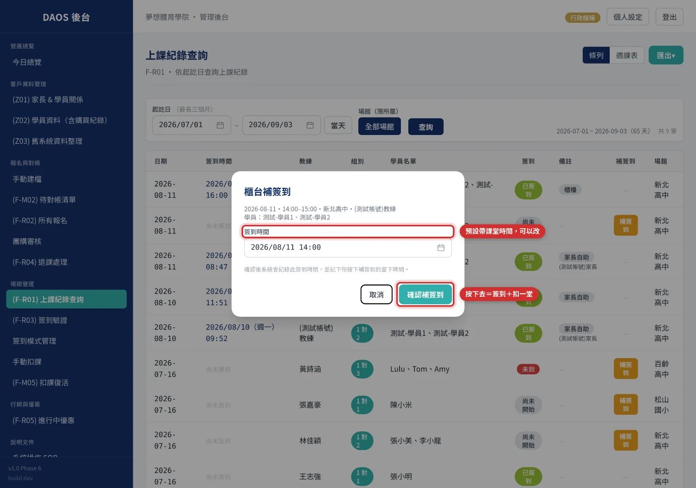
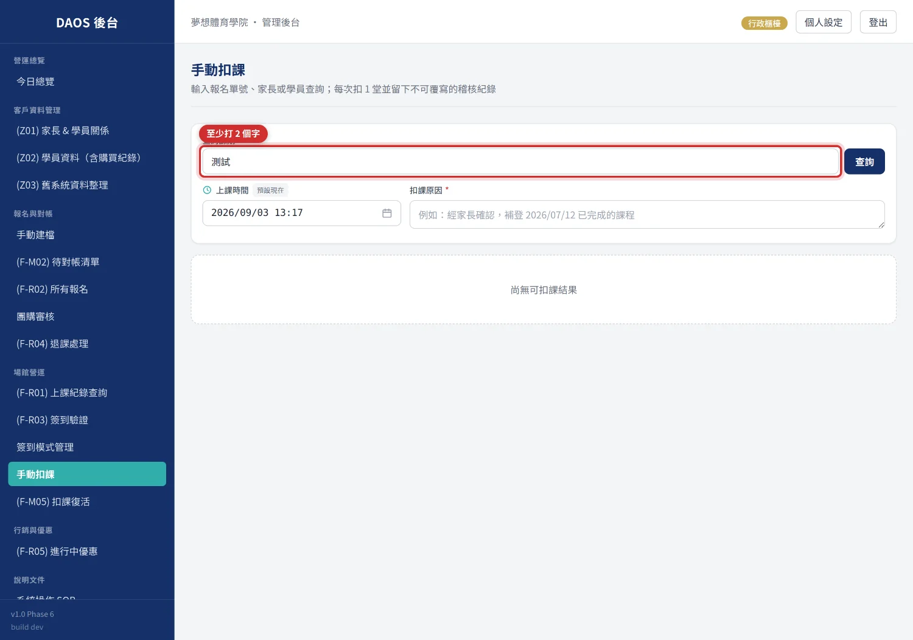
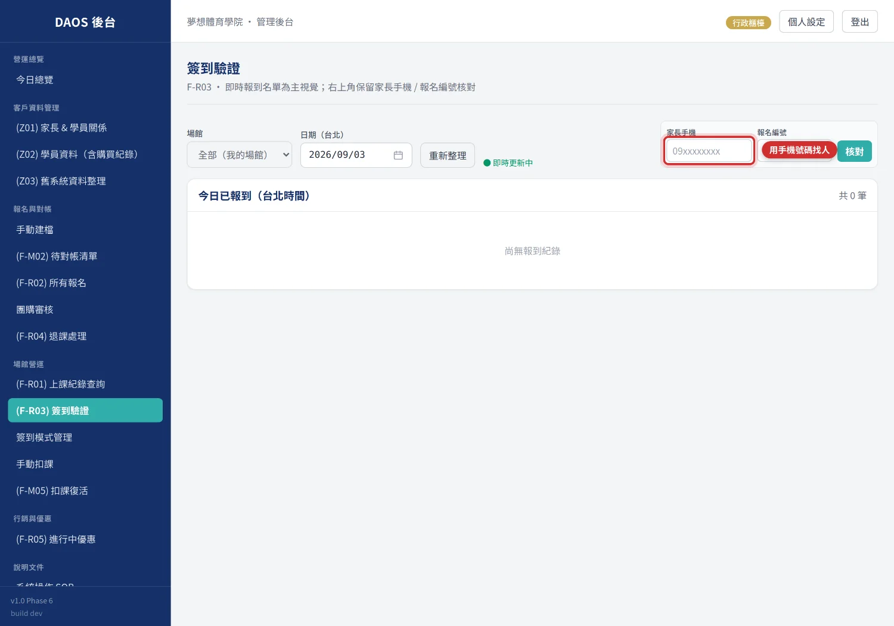
扣課復活
扣了課，但小孩其實沒來上。這一頁把那一堂還回去。
什麼時候用
- 我小孩今天根本沒去，怎麼被扣一堂？」
- 你剛剛補簽到按到別人了。
- 手動扣課扣到錯的課期了。
去這裡 →
-
在清單裡找到那一堂
這一頁列的就是「已經扣掉，但其實沒上到」的課。
上面有日期、時間、家長、教練、小孩、場館，用這些找。
你只看得到自己場館的課。
-
寫歸還原因
一定要寫。寫清楚一點，例如：
「7/12 學員發燒未到，櫃台誤按補簽到」
這段字以後會被翻出來看還回去之後，系統會永久記下三件事：什麼時候還的、誰還的、為什麼還。
月底對帳，或家長來問堂數的時候，看的就是這三格。
只寫「更正」兩個字，等於什麼都沒寫。
-
按歸還堂數
會看到「已將課堂 ○○ 歸還 1 堂」。
按兩下不會多還網路慢的時候不小心按了兩下也沒關係。
系統保證同一堂只還一次。
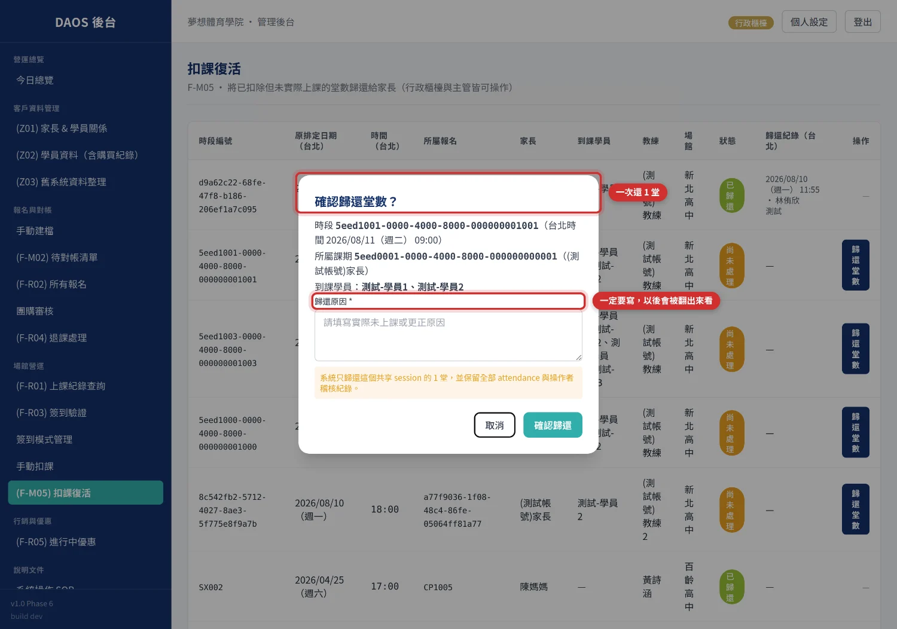
查詢上課紀錄
家長問「我這個月上幾堂了」，就查這裡。補簽到也在這一頁做。
什麼時候用
- 我這個月到底上了幾堂？」
- 上禮拜三那天，誰有來？」
- 我沒有簽到啊，怎麼被扣了？」
去這裡 →
-
設日期
一次最多查 三個月。
只想看今天，按右邊那顆 當天，它會直接查好，不用再按查詢。
-
選場館
一次只能選一個場館。要看全部就選「全部場館」。
找不到某個場館？清單裡只會出現真的有上過課的場館。
沒看到某一館，代表那一館從來沒開過課，不是系統壞掉。
-
按查詢
改了日期或場館，畫面不會自己重查。
看到橘色就是還沒查條件改過以後，查詢 這顆會變成橘色，
下面出現一行字：「條件已修改，按『查詢』套用」。
看到橘色，代表你眼前的結果還是舊的。要按下去才算數。
-
看結果
最新的在最上面，往下越來越舊。
欄位從左到右是：
日期 · 簽到時間 · 教練 · 組別 · 學員名單 · 簽到 · 備註 · 補簽到 · 場館家長說「我沒簽到」的時候，先看備註欄備註欄會寫：是誰按的簽到、或者為什麼被手動扣課。
答案通常就在那一格。
-
換看法、或存下來
右上角可以切 條列 和 週課表。
週課表一次只能看 31 天，太長會被擋。
要存檔按 匯出，可以存 CSV 或 Excel。
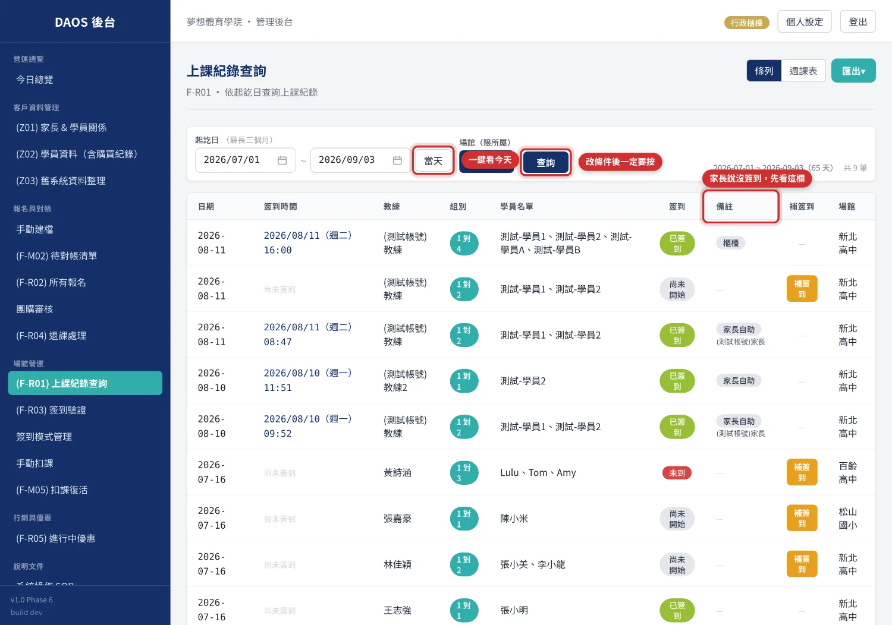
家長說這句，你開這頁
來不及翻手冊的時候，看這張表。
| 家長或教練說 | 開這一頁 | 第幾章 |
|---|---|---|
| 「我想報名，手機弄不好」 | 1 | |
| 「我們兩家要一起上」 | 2 | |
| 「錢轉了，末五碼 12345」 | 3 | |
| 「金額跟末五碼對不起來」 | → 退回補件 | 3 |
| 「我要退課」 | 4 | |
| 「昨天有來，忘記簽到」 | → 補簽到 | 5A |
| 「補的那堂系統裡沒有」 | 5B | |
| 「他自己按錯簽到了」 | 5C | |
| 「今天沒去，怎麼被扣一堂」 | 6 | |
| 「我這個月上幾堂了」 | 7 |